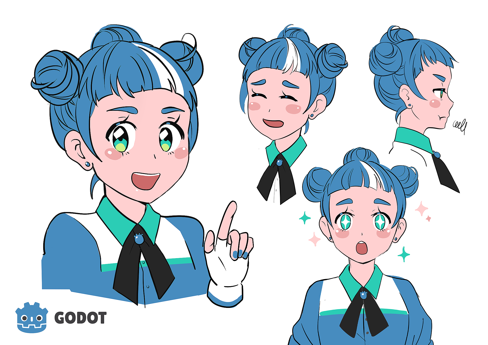
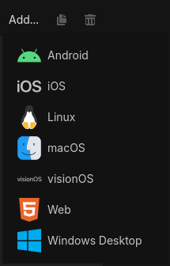

Enemigos con cerebro
Cómo un enemigo decide qué hacer: comportamientos, detección y máquinas de estado. Y para cerrar: exportar tu juego y presentarlo.
“El slime del TP7 tiene una sola idea. Hoy le damos varias — y la capacidad de cambiar de idea.”
Al terminar la clase van a poder…
- Entender qué es la IA de un videojuego (y qué no es)
- Reconocer los comportamientos básicos de un enemigo: patrullar, perseguir, atacar, huir
- Modelar un enemigo como una máquina de estados: estados + transiciones
- Implementarla en GDScript con
enumymatch - Exportar el proyecto final y presentarlo
El slime del TP7 tiene una sola idea
Hoy
Aparece → te persigue → te toca. Siempre lo mismo. A los 10 segundos ya sabés exactamente qué va a hacer. Es predecible, y lo predecible aburre.
Lo que queremos
Que patrulle sin verte. Que te vea y salga a perseguirte. Que al alcanzarte ataque. Que si te alejás mucho, se rinda y vuelva a patrullar.
if… muchos if. Y ahí está el problema que vamos a resolver hoy.“IA” en un juego no es lo que pensás
❌ No es
Machine learning, redes neuronales, ChatGPT. Nada de eso corre dentro de un enemigo de videojuego.
✅ Es
Un conjunto de reglas simples que hacen que el enemigo parezca que piensa. Comportamiento creíble, no inteligencia real.
🎮 Los fantasmas de Pac-Man (1980) son IA de videojuego en estado puro: cuatro reglas distintas, cero inteligencia, y 45 años después siguen siendo geniales.
Los comportamientos básicos de un enemigo
| Comportamiento | Qué hace | En una línea |
|---|---|---|
| 🚶 Patrullar | Camina sin rumbo o entre puntos fijos | position += dir_azar * vel * delta |
| 🏃 Perseguir | Va hacia el jugador (el del TP7) | dir = (jugador.position - position).normalized() |
| ⚔️ Atacar | Se frena y hace daño cada tanto | if $Timer.is_stopped(): pegar() |
| 🏳️ Huir | Se aleja del jugador (¡es perseguir al revés!) | dir = (position - jugador.position).normalized() |
¿Cómo “ve” al jugador?
📏 Por distancia
Lo que ya usan en el TP7. Un número: si está a menos de X píxeles, lo vio.
var d = position.distance_to(jugador.position) if d < 250: # ¡lo vi!
Simple, barato, sirve para el 90 % de los casos. Es lo que usamos.
👁️ Con un Area2D de visión
Un Area2D hijo del enemigo, con forma de círculo o cono. Cuando el jugador entra, se emite body_entered; cuando sale, body_exited.
Más flexible (conos de visión, sigilo). Todo lo que necesitan ya lo vieron en la Clase 4.
Con if se vuelve un spaghetti
func _process(delta): if lo_vi and not atacando and not huyendo: perseguir(delta) if d < 40: atacando = true elif atacando and not huyendo: atacar() if d > 60: atacando = false if vida < 2: huyendo = true; atacando = false elif huyendo: huir(delta) if d > 400: huyendo = false; lo_vi = false elif not lo_vi: patrullar(delta) if d < 250: lo_vi = true # ¿y si lo_vi y huyendo son true a la vez? 🤯
Lo que sale mal
- Tres booleanos que pueden contradecirse
- Cada comportamiento nuevo rompe los anteriores
- Imposible saber “¿qué está haciendo ahora?”
Máquina de estados: una sola pregunta
En vez de tres booleanos, una variable: estado. El enemigo está en un estado a la vez, y solo cambia por transiciones definidas.
- Estado: qué está haciendo (patrullar, perseguir…)
- Transición: la condición para pasar a otro
- Un estado a la vez. Nunca dos.
🚦 Analogía: el semáforo
Tres estados: verde, amarillo, rojo. Nunca dos prendidos. Y las transiciones son fijas: verde → amarillo → rojo → verde. Nadie se confunde.
Se llama Finite State Machine (FSM). “Finita” porque los estados son pocos y conocidos.
La máquina de estados del slime
enum para nombrar, match para elegir
# enum: una lista de nombres. Cada uno # es un número por dentro, pero vos # usás el nombre. Cero confusión. enum Estado { PATRULLAR, PERSEGUIR, ATACAR } var estado := Estado.PATRULLAR
# match: un if/elif especializado para # comparar UNA variable contra varios # valores. Más limpio que elif, elif… match estado: Estado.PATRULLAR: patrullar(delta) Estado.PERSEGUIR: perseguir(delta) Estado.ATACAR: atacar()
if estado == Estado.PATRULLAR: … elif … y funcionaría igual. match es lo mismo, pero se lee como el diagrama.El _process: hacer + decidir
func _process(delta: float) -> void: var d := distancia_al_jugador() match estado: Estado.PATRULLAR: patrullar(delta) # hacer if d < 250: estado = Estado.PERSEGUIR # decidir Estado.PERSEGUIR: perseguir(delta) if d < 40: estado = Estado.ATACAR elif d > 350: estado = Estado.PATRULLAR Estado.ATACAR: atacar() if d > 60: estado = Estado.PERSEGUIR
El patrón, siempre igual
En cada estado, dos cosas y en este orden:
- Hacer lo que corresponde al estado
- Decidir si cambio de estado
Compará con el diagrama: cada if es una flecha. Ni una más, ni una menos.
Los comportamientos son funciones cortas
func patrullar(delta): # camina despacio hacia una dirección al azar position += direccion_patrulla * velocidad * 0.5 * delta func perseguir(delta): # lo que ya hacía el slime del TP7 var dir = (jugador.position - position).normalized() position += dir * velocidad * delta func atacar(): # quieto, y pega cada vez que el Timer termina if $TimerAtaque.is_stopped(): jugador.recibir_dano(dano) $TimerAtaque.start() func distancia_al_jugador() -> float: return position.distance_to(jugador.position)
_process no sabe cómo se patrulla o se ataca: solo elige cuál llamar. Cada función se puede cambiar sin tocar las otras. (jugador se guarda una vez en _ready() con get_first_node_in_group.)¿Y si quiero que huya con poca vida?
Con el spaghetti de if, había que tocar todo. Con la máquina de estados, son tres pasos aislados:
- Un estado más en el
enum:HUIR - Una función más:
huir(delta)(perseguir al revés) - Las flechas nuevas: de cualquier estado →
HUIRsivida < 2; deHUIR→PATRULLARsi está lejos
enum Estado { PATRULLAR, PERSEGUIR, ATACAR, HUIR } # dentro del match: Estado.HUIR: huir(delta) if d > 400: estado = Estado.PATRULLAR func huir(delta): var dir = (position - jugador.position).normalized() position += dir * velocidad * 1.5 * delta
Máquinas de estado por todos lados
👻 Pac-Man (1980)
Cada fantasma tiene tres estados: Chase (te caza), Scatter (se va a su esquina) y Frightened (azul, huye) cuando comés la píldora. La FSM más famosa de la historia.
❗ Metal Gear Solid
El guardia: Patrol → Alert (!) → Evasion → Caution → Patrol. El signo de exclamación es, literalmente, una transición de estado que el juego te muestra.
🗡️ Hollow Knight / Dark Souls
Todo enemigo: Idle → Aggro → Ataque → Recuperación. Aprender a leer en qué estado está es la habilidad de estos juegos.
TP8: el slime aprende a pensar
Sobre el TP7, sin empezar de cero
- El slime básico pasa a tener 3 estados: patrullar, perseguir, atacar
- Ya no es kamikaze: ataca cada tanto con un Timer
- Si te alejás, se rinde y vuelve a patrullar
Y el élite, con herencia
- Hereda los 3 estados del básico
- Agrega un cuarto: HUIR cuando le queda poca vida
- Tres pasos aislados, como recién. Nada se rompe.
Tu juego al mundo
Ordenar, exportar y presentar el proyecto final. La última pieza del rompecabezas: que tu juego salga de tu compu.
“Terminaron un juego. No importa el tamaño. Terminarlo y poder compartirlo es lo más difícil.”

Antes de exportar: la lista
📁 Estructura recomendada
res:// ├── assets/ # sprites, audio, fonts ├── scenes/ # personajes, niveles, ui ├── scripts/ └── project.godot
- Main Scene: Project Settings → Application → Run
- Ícono y nombre: Application → Config
- Sin errores en rojo al jugar de punta a punta
- Rutas
res://, nuncaC:\Users\...
Exportar a Windows en 4 pasos
- Editor → Manage Export Templates → Download and Install (una sola vez; pesan varios GB)
- Project → Export → Add… → Windows Desktop
- Elegir carpeta y nombre:
mi_juego.exe - Export Project (no “Export PCK/ZIP”)
mi_juego.exe # el ejecutable mi_juego.pck # los recursos — SIEMPRE juntos

Testing: antes de decir “está listo”
- Jugar de principio a fin 3 veces
- Intentar romperlo: lugares raros, acciones inesperadas, apretar todo a la vez
- Que lo juegue alguien que nunca lo vio. Observar. No ayudar.
- Probar el .exe exportado, no solo desde el editor: ¿se escucha el audio? ¿se ve bien?
Juegos comerciales hechos en Godot
🥔 Brotato
Roguelite arena, éxito enorme en Steam. Un survivors como el del TP7.
🐾 Cassette Beasts
RPG de monstruos, aclamado por crítica y jugadores.
⛏️ Dome Keeper
Minería + defensa, un indie hit.
🔫 Buckshot Roulette
Fenómeno viral de terror.
⚔️ Halls of Torment
Survivor oscuro, top ventas.
🚀 …y el tuyo
Usan exactamente lo que aprendieron. La diferencia es escala, no fundamentos.
Todo lo que construyeron
| Clase 1 | Motor, interfaz, nodos y escenas |
| Clase 2 | GDScript: variables, condicionales, loops, funciones, input |
| Clase 3 | _ready(), _process(), delta, movimiento, Input Map |
| Clase 4 | CharacterBody2D, colisiones, señales, Area2D |
| Clase 5 | POO, herencia, instanciación, spawning |
| Clase 6 | UI: HUD, menús, cambio de escenas |
| Clase 7 | Animación, audio, Game Feel |
| Clase 8 | IA, máquinas de estado, exportación |
Cómo presentar tu juego
1 · Demo (5 min)
Mostrarlo funcionando. ¿Cuál es el objetivo? ¿Cómo se gana o pierde?
2 · Tour técnico (3 min)
Una parte del código que les costó o los enorgullece. Qué herramienta de Godot usaron.
3 · Reflexión (2 min)
¿Qué fue lo más difícil? ¿Qué agregarían? ¿Qué aprendieron sin esperarlo?
Para seguir aprendiendo
🔗 Recursos
- Docs Godot — docs.godotengine.org
- GDQuest — gdquest.com
- KidsCanCode — kidscancode.org
- Game Jams — itch.io/jams, globalgamejam.org
- Comunidad — r/godot y el Discord oficial
💛 El mejor consejo
Hacer juegos pequeños y terminarlos. Un juego de 5 minutos que funciona vale más que un RPG enorme que nunca se termina.
“El único juego que no enseña nada es el que nunca se termina.”
¡Felicitaciones! Hicieron un juego. · Capturas del editor: docs oficiales de Godot — CC BY 4.0.